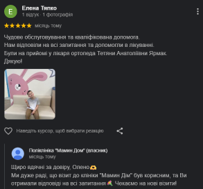
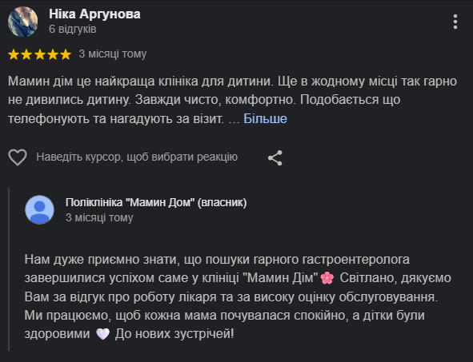
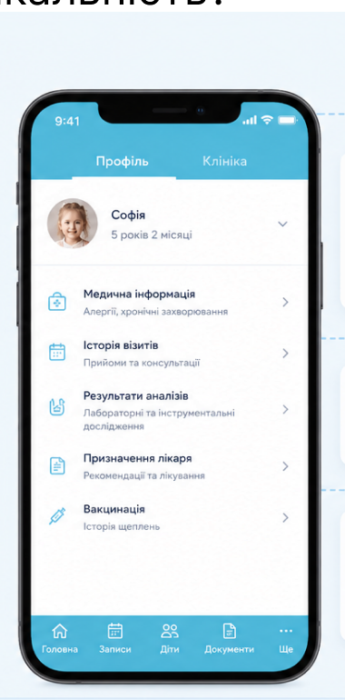

Планові огляди
та контроль розвитку
Регулярні огляди для оцінки фізичного розвитку, зросту, ваги та загального стану здоров’я дитини.
Дізнатись більшеПланові огляди, консультації при захворюваннях та відповіді на питання батьків в одному прийомі.
Комплексний підхід до здоров’я дитини на кожному етапі розвитку
Ми уважно слухаємо, ретельно оглядаємо та пояснюємо простими словами.
Наші педіатри мають великий досвід роботи з дітьми різного віку та знаходять підхід до кожного маленького пацієнта.
Регулярні огляди для оцінки фізичного розвитку, зросту, ваги та загального стану здоров’я дитини.
Дізнатись більшеДіагностика та лікування застуди, кашлю, болю в горлі, температури та інших поширених хвороб.
Дізнатись більшеКонсультації щодо грудного вигодовування, прикорму та формування здорових харчових звичок.
Дізнатись більшеПоради щодо зміцнення імунітету, сезонних вітамінів та профілактики захворювань.
Дізнатись більшеВідповіді на всі важливі питання щодо поведінки, сну, догляду та розвитку дитини.
Дізнатись більшеОцінка готовності дитини до колективу, вакцинація та оформлення довідок.
Дізнатись більшеНе відкладайте візит до педіатра. Своєчасна консультація допоможе уникнути ускладнень та забезпечити здорове майбутнє вашої дитини.
Турбота, увага та професійний підхід — для здоров’я вашої дитини
Лікар уважно вислухає ваші скарги,
розпитає про стан дитини та історію хвороби.
Педіатр проведе комплексний огляд,
оцінить розвиток та загальний стан.
При потребі — призначення аналізів
чи додаткових обстежень у нашому центрі.
Лікар пояснить результати та надасть чіткі
рекомендації щодо лікування та профілактики.
Ми завжди на зв’язку: супровід, контроль
та повторні консультації за потреби.
Зберіть попередні аналізи та виписки (якщо є),
щоб лікар міг швидше допомогти вашій дитині.
Педіатр
Перейти на сторінкуПедіатр
Перейти на сторінкуПедіатр
Перейти на сторінкуПедіатр
Перейти на сторінкуТри варіанти супроводу — від разової консультації
до повного спостереження за здоров’ям дитини
Що кажуть наші пацієнти


Щоб кожній дитині вистачало часу на повний огляд і спокійну розмову з батьками, ми не записуємо більше пацієнтів, ніж лікар може прийняти якісно.
Оновлюється протягом дня — місця займають інші пацієнти
Зайняти місце заразУсі важливі дані, результати аналізів та призначення лікаря —
завжди під рукою в особистому кабінеті.
Результати аналізів, висновки лікарів, призначення
та рекомендації зберігаються у вашому кабінеті.
Всі записи до лікарів, плани візитів і нагадування
про прийом — у зручному календарі.
Додавайте дітей та близьких, керуйте їхніми
медичними даними з одного акаунта.
Ваші дані надійно захищені та доступні лише вам.

Завантажте безкоштовно та отримайте доступ
до всіх можливостей вашого особистого кабінету.
Пояснюємо все, що хвилює батьків перед записом на прийом.
При температурі, кашлі, висипі, болю або будь-яких змінах у самопочутті дитини.
Збір анамнезу, комплексний огляд, рекомендації та план подальших дій.
До 60 хвилин — без поспіху та з відповідями на запитання батьків.
Так, для запису до педіатра направлення не потрібне.
Так, ми проводимо планові огляди дітей різного віку.
За рекомендацією лікаря або для контролю динаміки лікування.
Так, доступний виклик лікаря додому в межах міста.
Візьміть попередні висновки, аналізи та виписки, якщо вони є.
Наш адміністратор допоможе підібрати педіатра
та зручний час прийому.